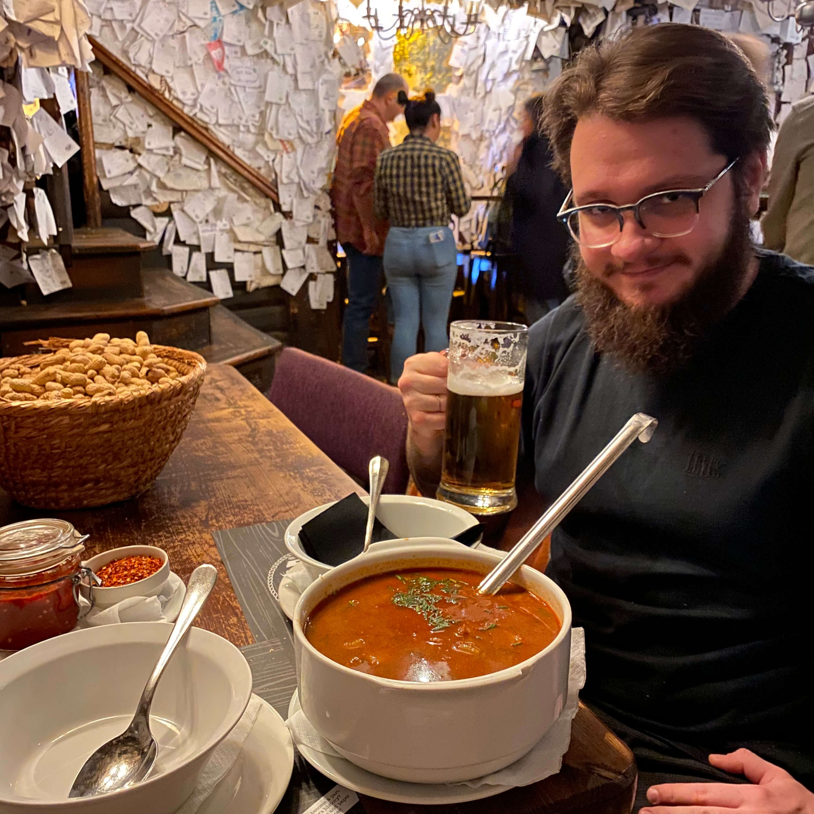
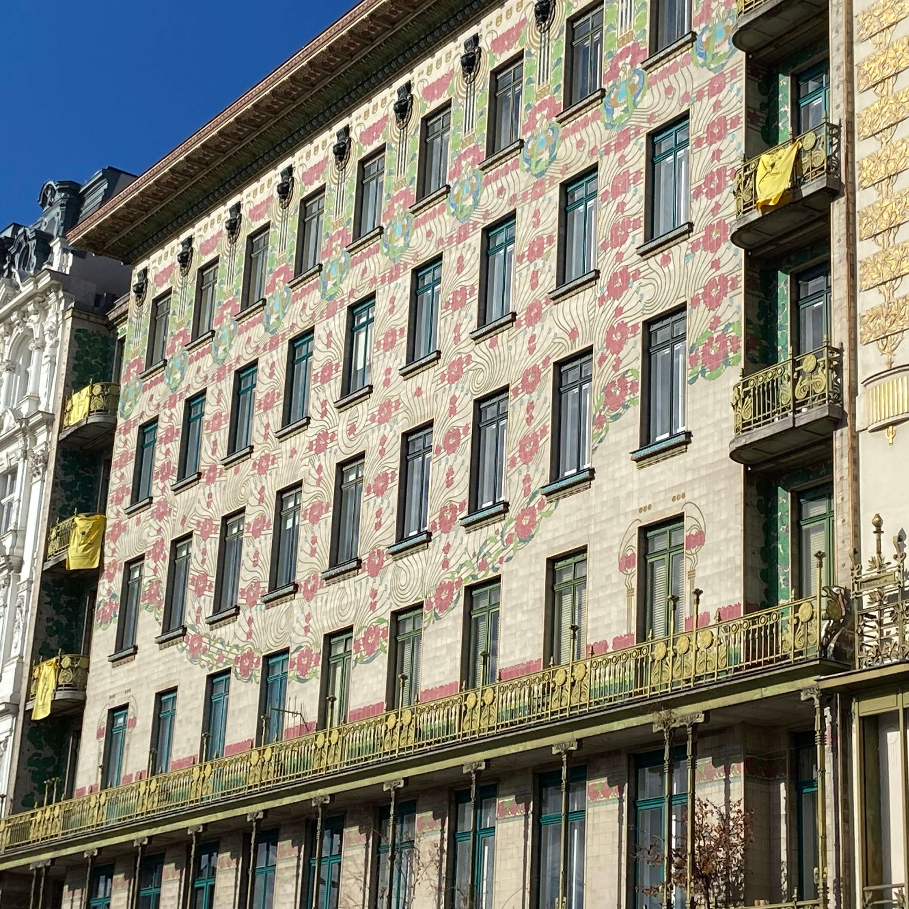
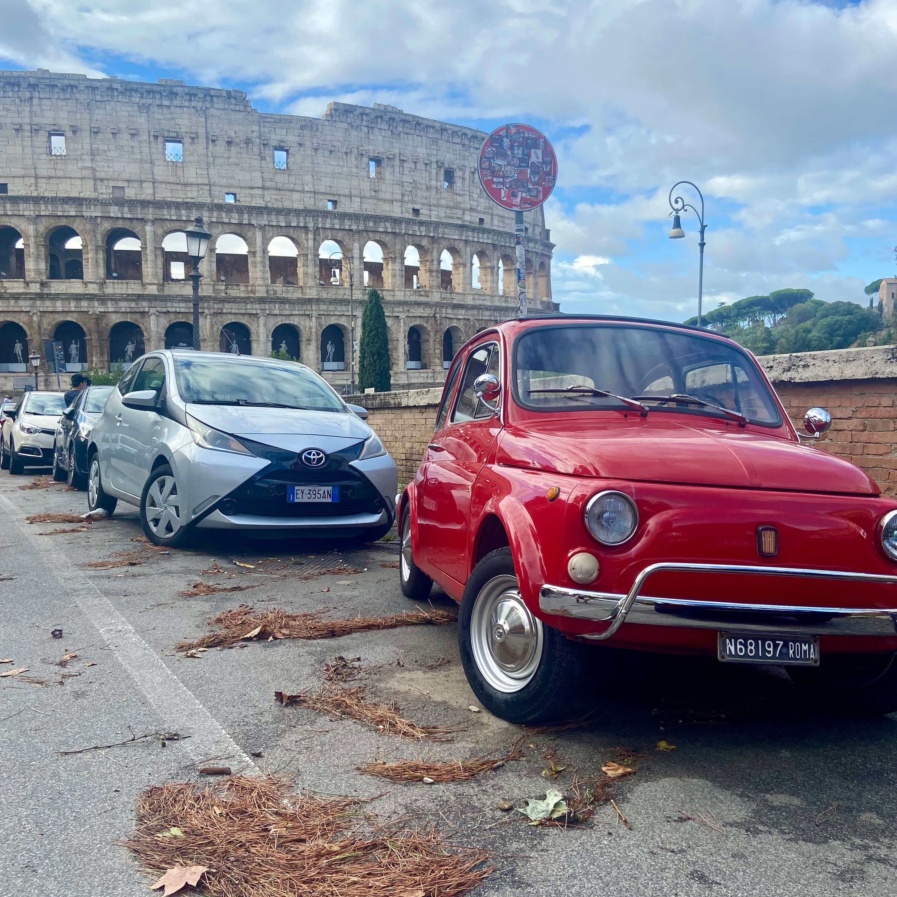
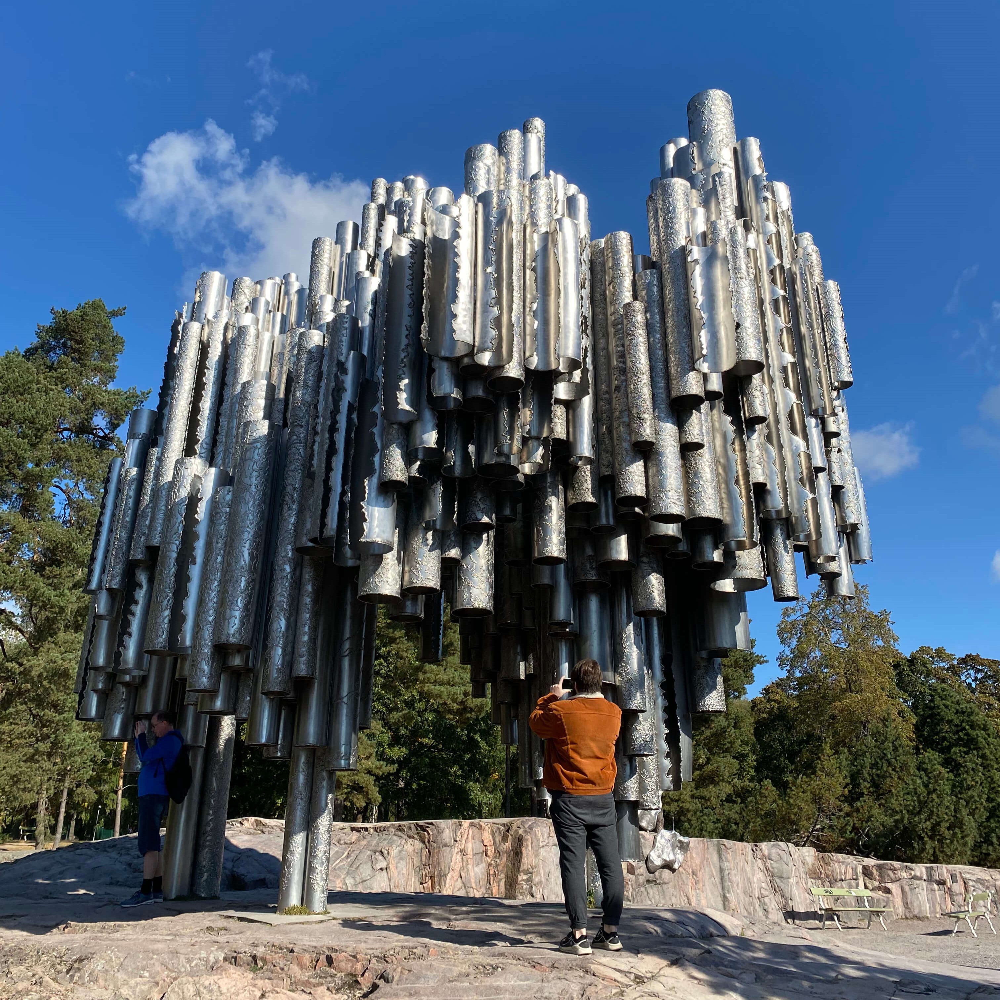
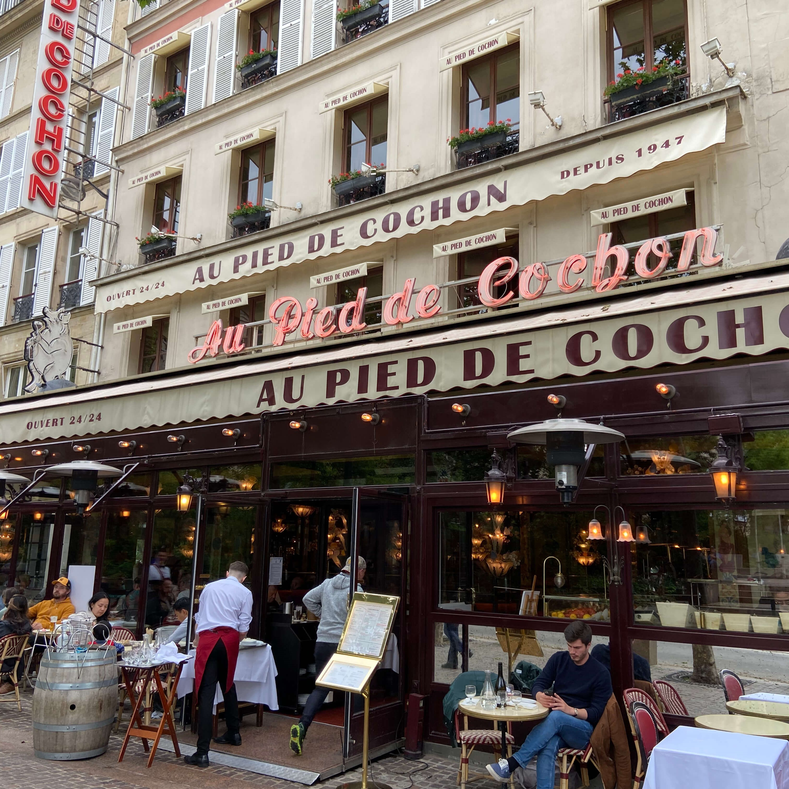

for sale pub – любимый ресторан в Будапеште

Вожу мини-группы по Европе — и показываю страны, которые полюбил сам. Свои рестораны, свои маршруты, свои лайфхаки. Без толп, без «галок», без перегруженных программ.
Профиль: гастрономия, атмосфера, небанальные маршруты по Европе. Специализируюсь на уютных путешествиях, которые запоминаются не количеством достопримечательностей, а качеством впечатлений.
Я не продаю пакеты с перелётами — помогаю организовать путешествие так, чтобы вы просто наслаждались, а не решали проблемы. Помогаю с визой, подбором билетов, жилья и логистики.
Группы до 8 человек — потому что в большом коллективе теряется дух настоящего путешествия.
Если вы ищете не «экскурсию», а погружение в страну через еду, людей и атмосферу — вам ко мне.
Живу между Россией и Европой, постоянно в движении. Веду авторский блог о путешествиях — «ПЕК: пить, есть и колесить».



